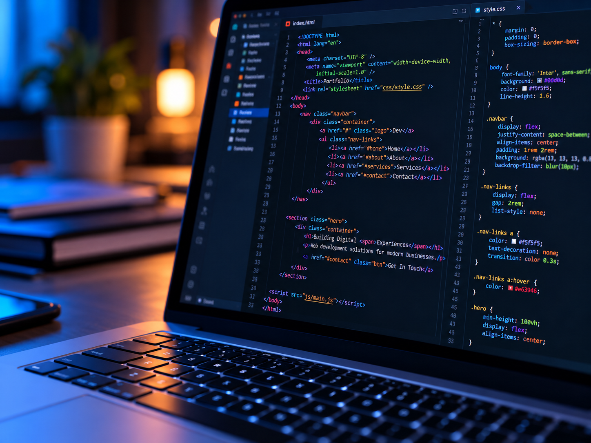
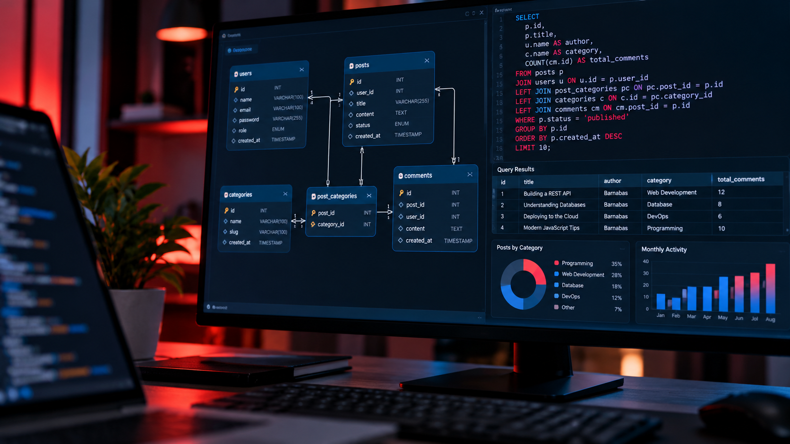
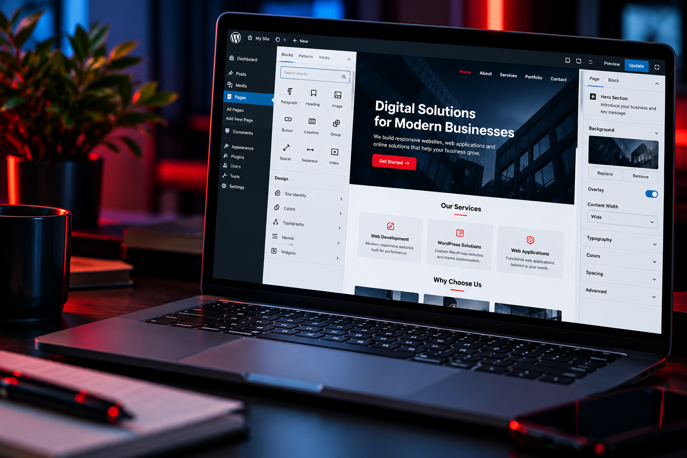

01USER INTERFACE
Frontend Development
I create responsive, user-friendly interfaces that look good and work across desktop, tablet, and mobile devices.
- Responsive website layouts
- Interactive web pages
- HTML, CSS and JavaScript
WHAT I DO
I build responsive websites and functional web applications that help businesses establish their online presence and turn ideas into practical digital solutions.
Explore My ServicesMY EXPERTISE
From the interface users see to the systems working behind it, I focus on building websites that are useful, reliable, and easy to navigate.

01USER INTERFACE
I create responsive, user-friendly interfaces that look good and work across desktop, tablet, and mobile devices.
SERVER-SIDE SYSTEMS
I develop the server-side functionality that allows web applications to process requests, manage information, and communicate with databases.

03DATA MANAGEMENT
I structure and connect databases to help applications store, retrieve, and manage information efficiently.

04WEBSITE SOLUTIONS
I build and customize WordPress websites to help individuals and businesses present their services professionally online.
MY APPROACH
Every project starts with understanding the goal and ends with a website that is ready to be tested.
I clarify your goals, requirements, and target users.
I organize the structure and develop the solution.
I check functionality, responsiveness, and usability.
I prepare the completed work for deployment.
HAVE A PROJECT IN MIND?
Have an idea for a website or web application? Let's discuss what you need and how I can help.
Get In Touch